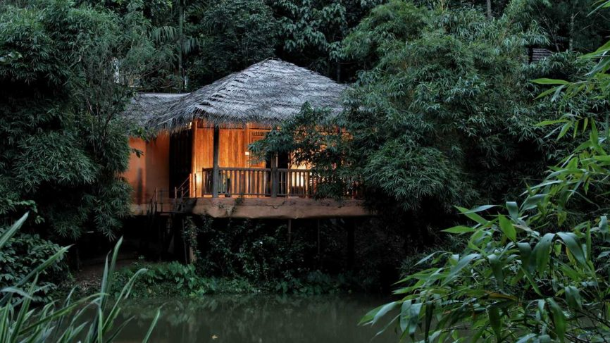
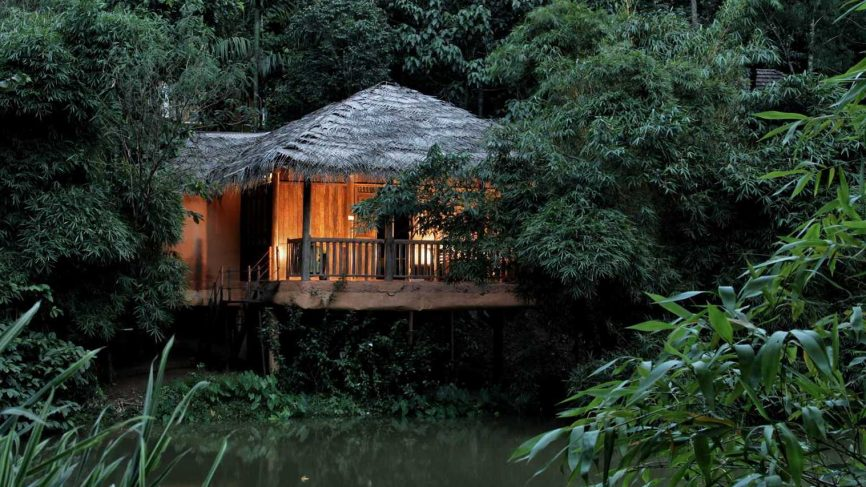
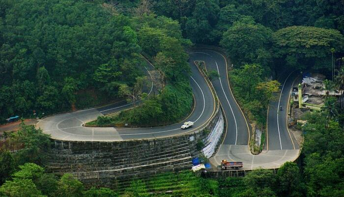
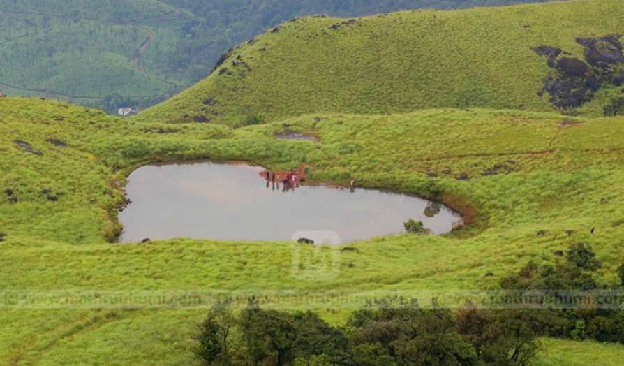
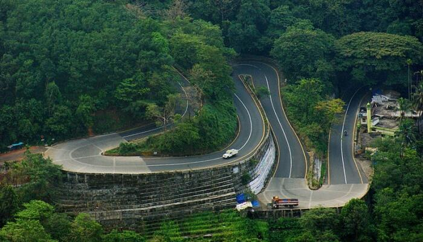
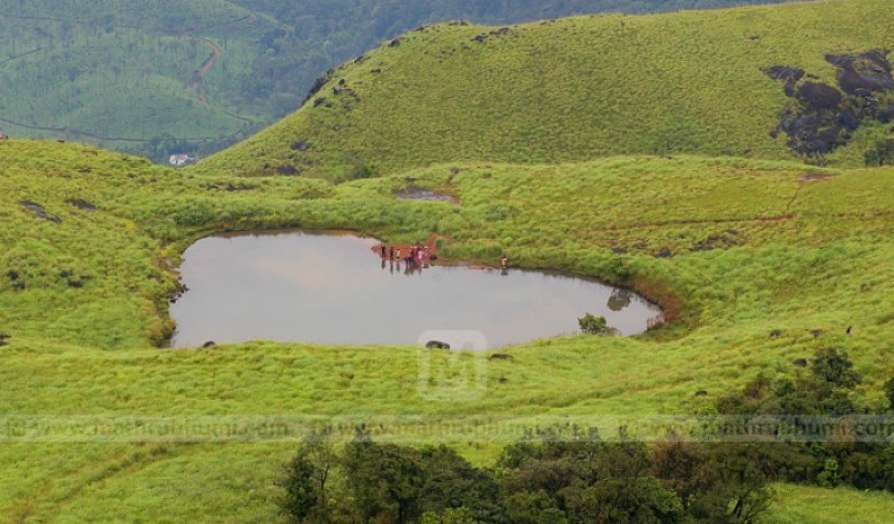
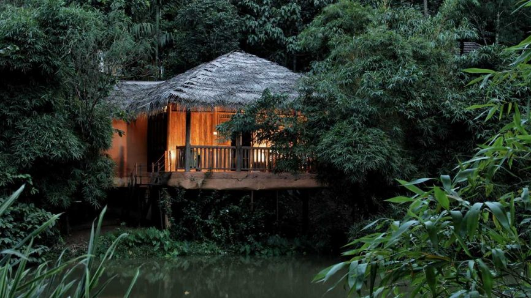
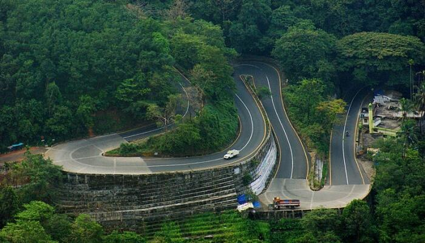
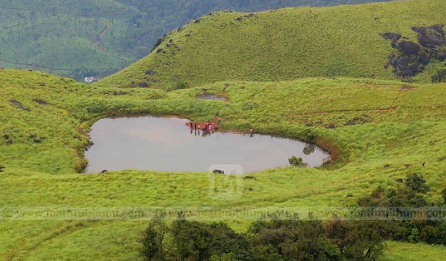

TOP DESTINATIONS
 

 




Wayanad is an Indian district in the north-east of Kerala state with administrative headquarters at the municipality of Kalpetta. It is set high on the Western Ghats with altitudes ranging from 700 to 2100 meters.
Wayanad is an Indian district in the north-east of Kerala state with administrative headquarters at the municipality of Kalpetta. It is set high on the Western Ghats with altitudes ranging from 700 to 2100 meters.[5] The district was formed on 1 November 1980 as the 12th district in Kerala by carving out areas from Kozhikode and Kannur districts. About 885.92 sq.km of area of the district is under forest.[6] Wayanad has three municipal towns—Kalpetta, Mananthavady and Sulthan Bathery. There are many indigenous tribals in this area.[7][8] Wayanad district is bordered by Karnataka to north and north-east, Tamil Nadu to south-east, Malappuram to south, Kozhikode to south-west and Kannur to north-west.[9] Pulpally in Wayanad boasts of the only Lava- Kusha temple in Kerala and Vythiri has the only mirror temple in Kerala which is a Jain temple. The edicts and caves of Ambukuthi Mala and another evidence state that the place is as old as the beginning of the New Age Civilisation.[10]


